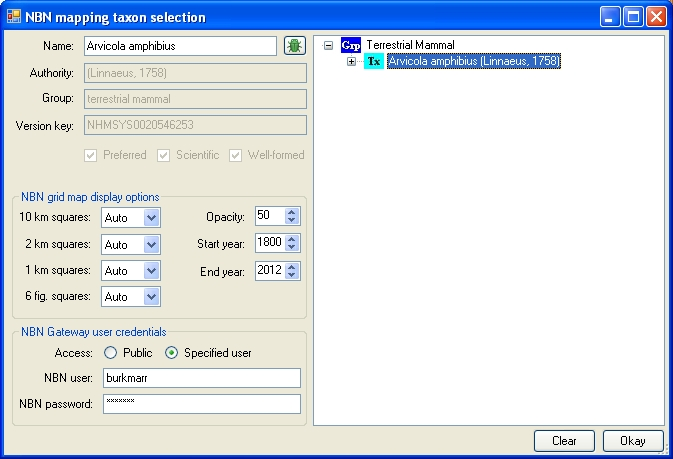
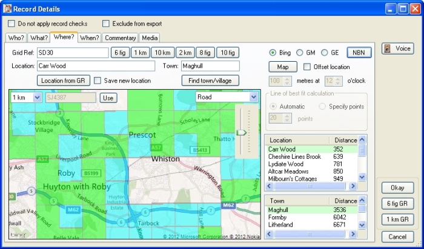

Gilbert 21 - NBN mapping dialog
From the Where tab of the record properties form you can invoke the NBN mapping dialog which allows you to display an NBN species distribution map over any Bing or Google map on the Where tab.

If you have a scientific name specified on the Where tab, this will automatically appear in the Name text box when this dialog appears and a search of the NBN Gateway taxon dictionary is automatically made to find a match. If a single match is found, the details of the matching taxon (Authority, Group and Version key) appear on the dialog. If more than one match is made, you can select the one you want from the 'tree view' list of taxa on the right.
Alternatively you can enter your own search term into the Name text box and search the NBN taxon dictionary by hitting the enter key on your keyboard or clicking the search button (the little green bug icon).
Use the options in the NBN grid map display options frame to modify what NBN distribution map. By default, Gilbert 21 will automatically determine - from the 'zoom level' of your map - whether or not it is appropriate to display 10 km (hectad), 2 km (tetrad), 1 km (monad) or 6 figure grid references. But by changing the value of any of the drop-down listboxes from Auto to either On or Off you can specify whether the grid squares are to be shown or not regardless of the zoom level.
You can specify the opacity of the NBN distribution map by setting the value of Opacity control. The default value is 75% which means that you can see the basemap through the NBN distribution map. To see the basemap even more clearly, lower this value. To make the NBN distribution map more opaque, increase this value.
You can limit the records which contribute to the distribution map by setting the Start year and End year filters.

If you select the Public option for Access then the NBN Gateway will provide access to records at the resolution available for public access. However, you can select the Specified user option to provide the name and password of any registered NBN Gateway user in order to build a distribution map from records available to you at a higher resolution.
Instead of having to re-specify your NBN username and password on this dialog every time you start Gilbert 21, you can specify them on the Data options tab of the Options dialog (available from red toolbox icon on the main Gilbert 21 form) and these will then be remembered from session to session.
Please note that, at the time of writing (26th September 2012), there is a problem with the NBN Gateway WMS service (which generates these distribution maps) that means that grid squares displayed over Bing or Google maps (WGS84 projection) are slightly displaced. It is anticipated that this problem will be fixed in the new release of the NBN Gateway services in December 2012.
Created with the Personal Edition of HelpNDoc: Produce electronic books easily